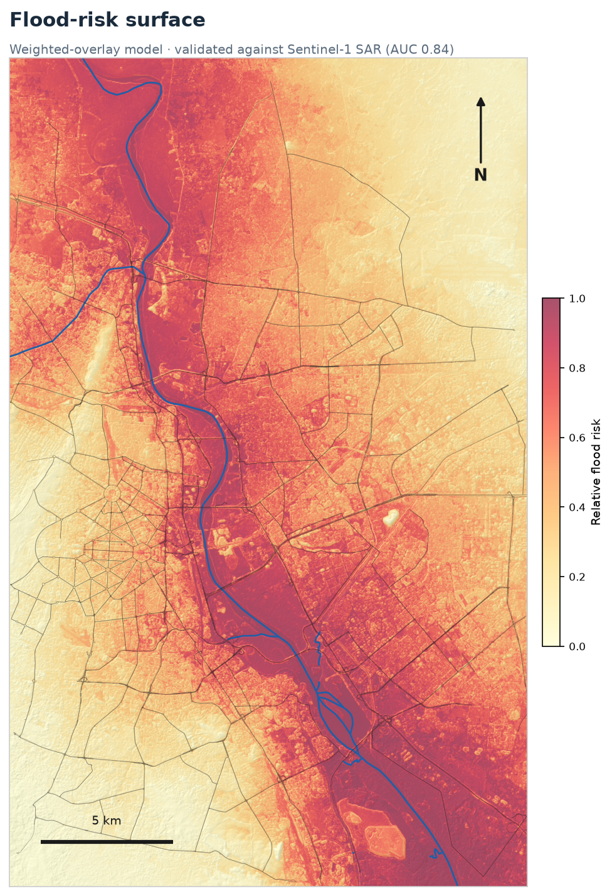
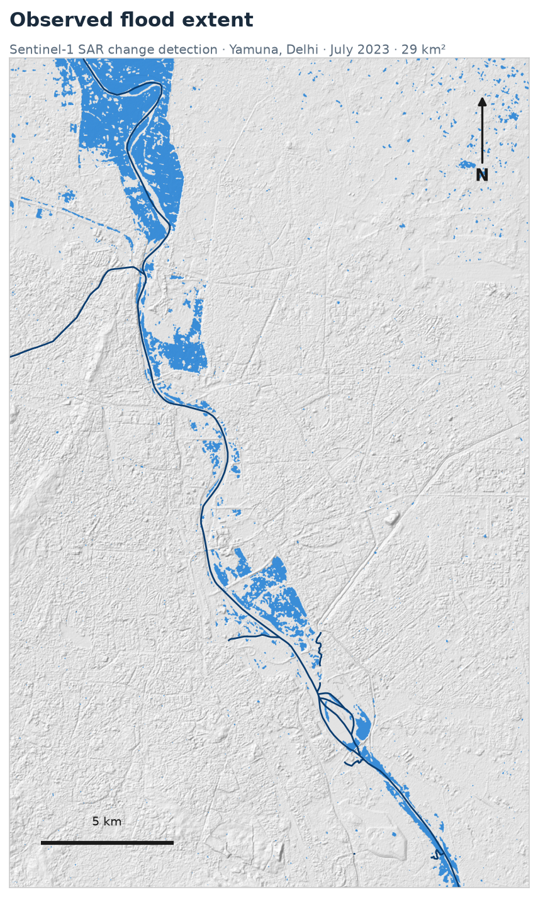
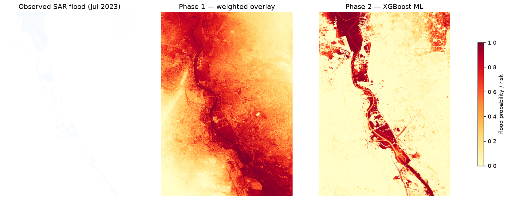
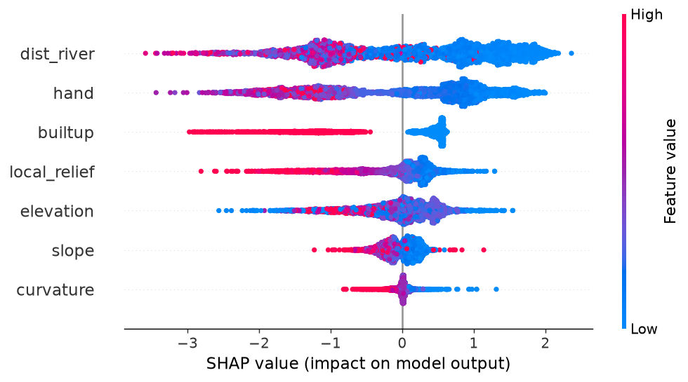
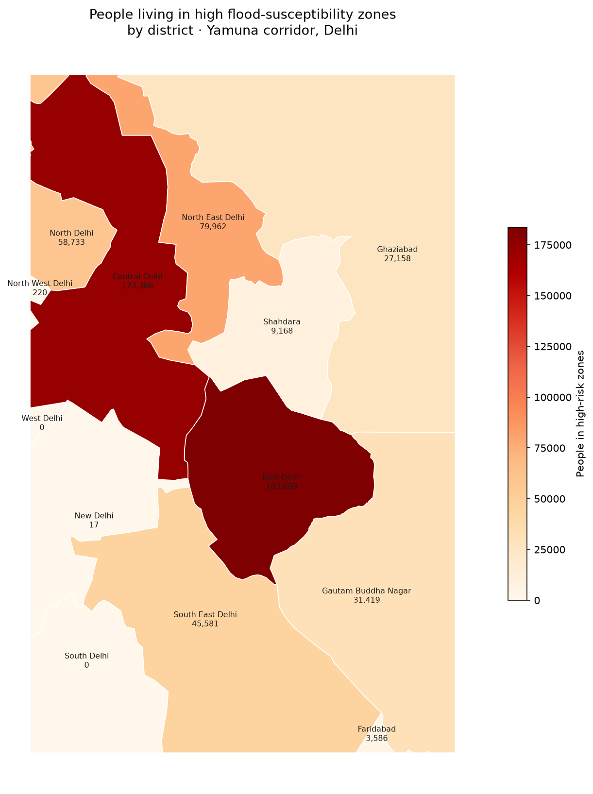

Sentinel-1 SAR detection of the July 2023 flood, and a flood-risk model
validated against it — built end-to-end in Python.
Area of interest: Yamuna corridor, Delhi (28.50–28.78°N, 77.18–77.38°E) · 10 m resolution
29 km²
Observed flood
SAR, July 2023
0.84 → 0.92
Model AUC
overlay → ML
613k
People at risk
in high-risk zones
610 km²
Area mapped
10 m grid

Relative flood risk from a weighted overlay of elevation, distance-to-river, slope and built-up surface.

Flood extent detected from Sentinel-1 radar change detection (June vs. July 2023).
Risk-zone breakdown
Very High152 km²
High152 km²
Medium152 km²
Low152 km²
Highest-risk roads — motorist watch-list
#
Road
Risk
Score
1
Jhasi Rani Lakshmibai Road
0.96
2
DND KMP Expressway
0.95
3
Bandh Road
0.95
4
Baba Banda Singh Bahadur Setu Ramp
0.94
5
Vishwakarma Flyover, Jhasi Rani Lakshmibai Road
0.93
6
Dadri Main Road
0.93
7
Aurangzeb Road
0.93
8
Udyog Marg
0.93
9
Maharaja Agrasen Marg Underpass
0.93
10
Kalindi Kunj Bridge
0.92
Mean modelled flood risk along each major road. A starting point for driver advisories.
Explore the interactive map
Phase 2 — machine-learning model
An XGBoost model trained on the SAR flood with seven terrain features, validated by
spatial cross-validation (AUC 0.92, vs. 0.84 for the weighted overlay).
Ordinary random CV would report 0.97 — that gap is spatial leakage, which spatial CV removes.

Observed flood vs. Phase 1 overlay vs. Phase 2 ML — the ML map resolves finer floodplain structure.

SHAP: distance-to-river and HAND drive risk; built-up pushes toward “dry” (a SAR blind-spot, not safety).
People at risk by district

District
Population
At risk
%
East Delhi
1,198,228
183,609
15.3
Central Delhi
1,305,585
173,388
13.3
North East Delhi
1,379,113
79,962
5.8
North Delhi
307,867
58,733
19.1
South East Delhi
1,352,249
45,581
3.4
Gautam Buddha Nagar
835,442
31,419
3.8
Ghaziabad
1,584,275
27,158
1.7
Shahdara
1,333,785
9,168
0.7
Residents where modelled susceptibility ≥ 0.5 (WorldPop 2020). ~613k people total.
Method & honest limitations
What this shows: riverine floodplain risk, validated against a real event.
What it doesn't: SAR is largely blind to shallow street-waterlogging between buildings,
so the road ranking reflects floodplain exposure, not live street flooding. Risk is
relative within this area and validated on a single event. Built-up area anti-correlates
with this riverine flood (it sits on higher ground) and is weighted low. A machine-learning
Phase 2 extends this with spatial cross-validation and population exposure.